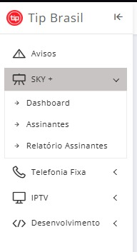
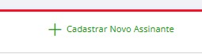
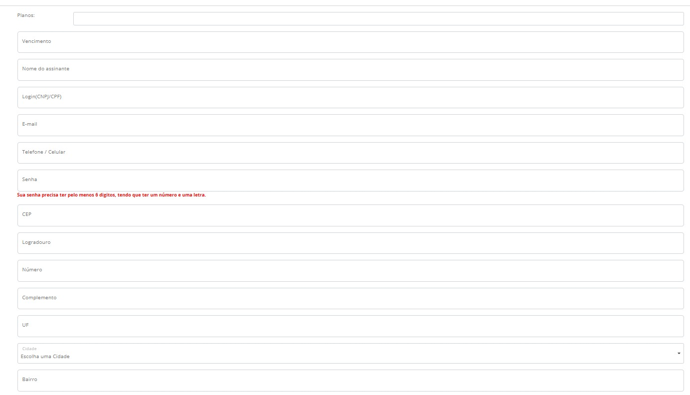
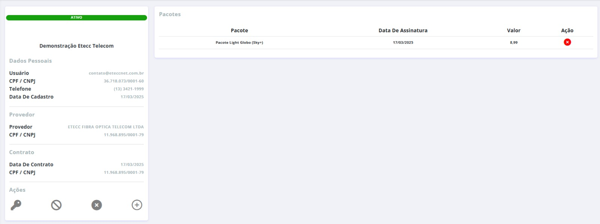
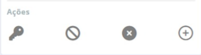

Streaming
TV
Provisionamento
Atualizado em: 24 Dez 2025
Painel de Gestão e Provisionamento
1. Links de Acesso
2. Ativação via MK Integradores
- Acesse o menu Integradores.
- Vá em Gerenciamento TV > Clientes de TV.
- Selecione o cliente na lista.
- Clique no ícone do cadeado azul (Desbloqueio).
3. Gestão de Usuários Sky+
Siga o fluxo para criação de novos assinantes na plataforma:

1. Menu Assinantes
2. Cadastrar Novo
3. Formulário
4. Perfil do Usuário
5. Ações Disponíveis| Função | Descrição |
|---|---|
| Alterar Senha | Redefinição de acesso do cliente. |
| Bloquear/Cancelar | Interrupção temporária ou definitiva do sinal. |
| Adicionar Pacote | Inclusão de canais extras (Premiere, Combate, etc). |
Senha Padrão:
etecc123
4. Dispositivos e Compatibilidade
Box Certificados
Melhor experiência On Demand. Permitem Google Play Store oficial.
Ex: Easy, Xiaomi, Elsys, Intelbras e Izy.
Smart TVs
Samsung: (A partir de 2019)
LG: (A partir de 2020)
*Roku e sistemas próprios podem ter limitações.
5. Resolução de Problemas
Erro 14008
Conflito de senha no banco de dados da operadora.
Upgrade de Plano
No momento, contatar o T.I. para alteração manual na plataforma TIP.